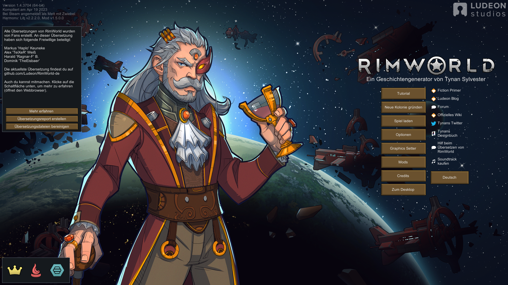
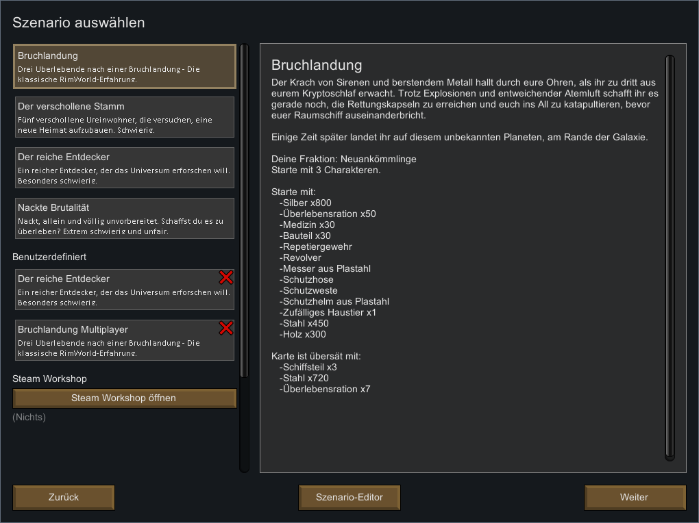
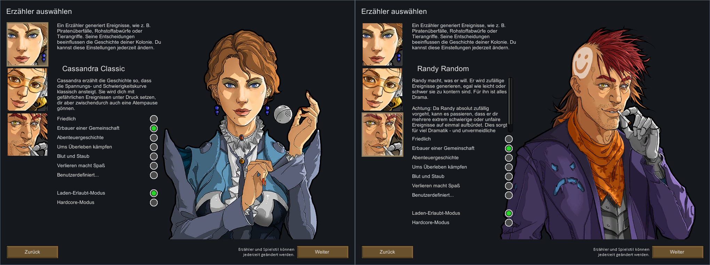
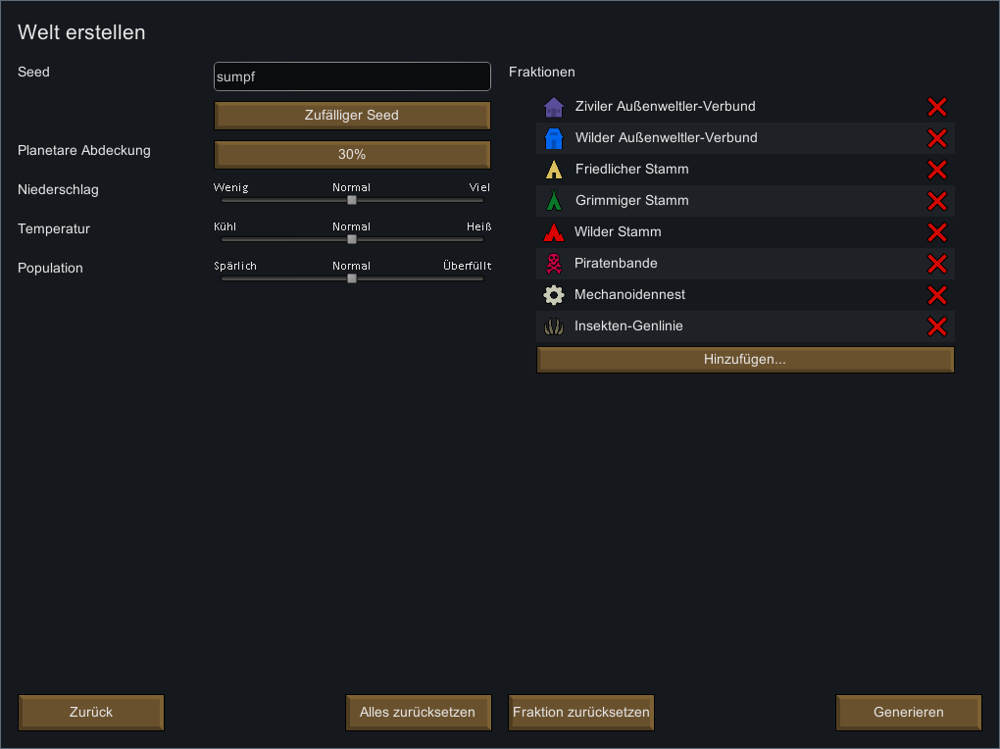
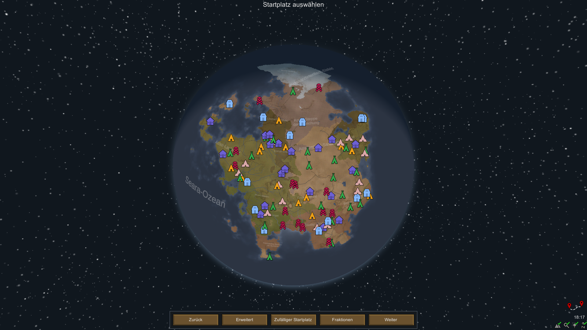

Rimworld Guide
Rimworld Guide
Tutorial 1: Die Vorbereitung
1.1: Startbildschirm
Das Spiel wird dich nach dem Start mit diesem Screen begrüßen.

Es gibt viele Buttons aber für uns sind nur die Buttons „Tutorial“
und „Neue Kolonie gründen“ interessant.
Es empfiehlt sich zuerst das Tutorial zu spielen, um die
Steuerung zu lernen und dann, nachdem man das Tutorial
abgeschlossen hat, ein neues Spiel zu starten.
Also klicken wir auf „Neue Kolonie gründen“.
1.2: Szenario
Nachdem man seine Kolonie gegründet hat, sieht man diesen Bildschirm. Hier kann man seinen Erzähler auswählen.

In diesem Screen sieht man die Unterschiedlichen Szenarien, die
man wählen kann.
Wenn man sein Szenario ausgewählt hat, sieht man eine kurze
Beschreibung und man sieht mit welchen Materialien man startet
und mit wie vielen Kolonisten.
Im ersten Spiel sollte man „Bruchlandung“ spielen da es
der einfachste Start ist.
Die anderen sind für Spieler mit mehr Erfahrung, besonders „Der
reiche Entdecker“.
Dieser Start mag verlockend aussehen, aber man startet nur mit
einem Kolonisten, was den Start recht schwer und mühsam macht.
Deshalb wählen wir „Bruchlandung“ und drücken auf „Weiter“.
1.3: Erzähler
Nachdem man sein Szenario gewählt hat, sieht man diesen Bildschirm. Hier kann man seinen Erzähler auswählen.

Am Anfang empfehle ich Cassandra zu benutzen, da sie ihre
Schwierigkeit langsam erhöt und somit nicht unfair wird.
Das bedeutet, dass am Anfang mehr gute Events passieren und es
gegen Ende mehr schlechte werden.
Wer ein bisschen mehr Zufall in seinem Spiel haben möchte sollte
Randy wählen.
Bei ihm ist es zufällig ob es ein gutes oder ein schlechtes
Event wird.
Ich persönlich finde diesen Erzähler interressanter, aber für
das erste Spiel ist Cassandra besser.
Es gibt noch den Erzähler Phoebe. Diesen kann ich nicht
empfehlen.
Es die Events kommen immer in Blöcken erst kommen eine Zeit lang
nur gute Events und dann eine Zeit lang nur schlechte.
Das ist für Anfänger eher schlecht und ich kann diesen Erzähler
insgesammt nicht empfehlen.
Zum Start sollte man als Anfänger „Erbauer einer
Gemeinschaft“ oder „Abenteuergeschichte“ als
Schwierigkeit spielen um das Spiel kennenzulernen,
außerdem sollte man im „Laden-Erlaubt-Modus“ spielen um
Speicherstände erstellen zu können.
Wenn man „Hardcore-Modus“ hat man nur einen Speicherslot.
Jetzt können wir auf „Weiter“ drücken.
1.4: Die Welt
Jetzt kommen wir in den Welterstellungs-Screen in der wir bei Bedarf unsere Welt bearbeiten können.

In diesem Screen kann man in seinem ersten Spiel alles so lassen
wie es ist.
Mögliche einstellungen sind Anzahl und Art der Fraktionen,
Temperatur, Population, Niederschlag und Planetare Abdeckung.
Letzteres gibt an wie viel Prozent des Planaten Land sind. Man
kann auch den Seed verändern und sich merken um die selbe Welt
wieder generiern zu können.
Da es sich aber um das erste Spiel handelt belassen wir es bei
den Standarteinstellungen und Drücken auf „Generieren“.
1.5: Der Landeplatz
Jetzt haben wir unsere Welt und können unseren Startplatz wählen.

Ein guter Platz für eine Landung sind Berge da sie leichter zu
verteidigen sind als offene Flächen und man sich gut eingraben
kann.
Außerdem sollte man darauf achten in der Nähe freundlicher
Siedlungen zu landen um später leichter Handel betreiben zu
könne, aber Vorsicht, wenn man nicht genug Abstand hält,
werden die jeweiligen Fraktionen sauer und verlangen immer
wieder Geld, um nicht feindlich zu werden.
Als Biom sollte man "Gemäßigter Wald" wählen, da es das
Einfachste ist und man nicht mit sehr extremen Temperaturen
umgehen muss.
Wer will kann an einem Fluss landen, um Wasserräder zu benutzen.
Ich denke aber, dass es mehr Nachteile hat als Vorteile.
Wasserräder sind nicht sehr effektiv und sind an den Fluss
gebunden, weshalb sie von Angreifern oft angegriffen nicht so
wie Solarplatten,
die man in seiner Basis platzieren kann und damit auch besser
verteidigen kann.
Nun wählt man seinen Landeplatz und drückt auf „Weiter“.
Hier ist dieses Tutorial auch zu ende. Weiter geht’s im „Tutorial 2: Charakterauswahl“
 PDFs
PDFs Kontakt
Kontakt Rimworld auf Steam
Rimworld auf Steam Rimworld auf
Youtube
Rimworld auf
Youtube